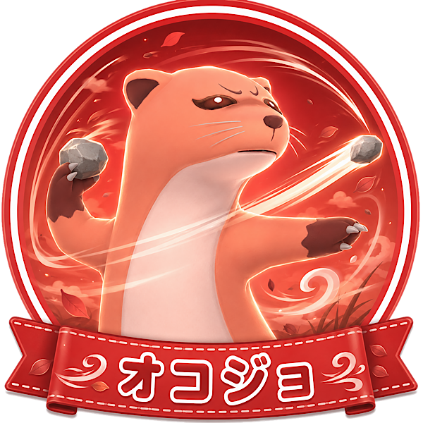

「存在感のある遠投サポート」タイプ
あなたは、自分の存在感を出しながらも、チームの役に立つ動きができるタイプ。
前に出るだけではなく、遠くへ食材を届けるようなサポートにも面白さを感じます。
多少ダイナミックな動きでも、うまくハマれば大きく流れを変えられると考えられる人です。
大きな見た目や派手な動きも含めて楽しめる、のびのびしたプレイヤーです。
オコジョは長距離に物を投げられるキャラです。
畑の収穫物をキッチンへ送ったり、魚や卵を寄せたりと、使い方次第でチームの移動時間を減らせます。
投げる先を考える必要はありますが、うまく使えるとかなり便利です。
ダイナミックに動きつつ、裏方サポートもしたいあなたに向いています。